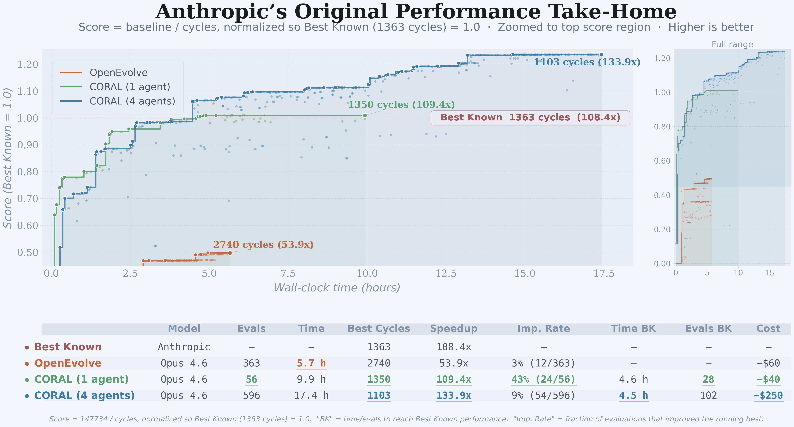
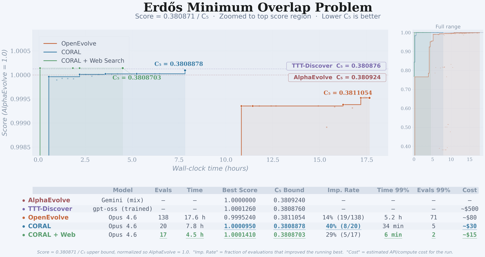
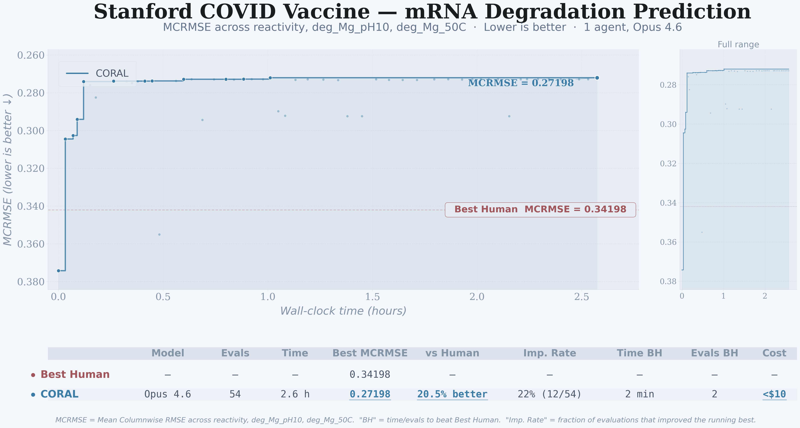
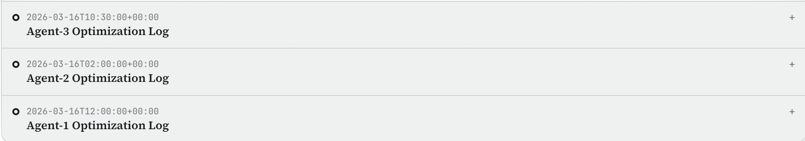
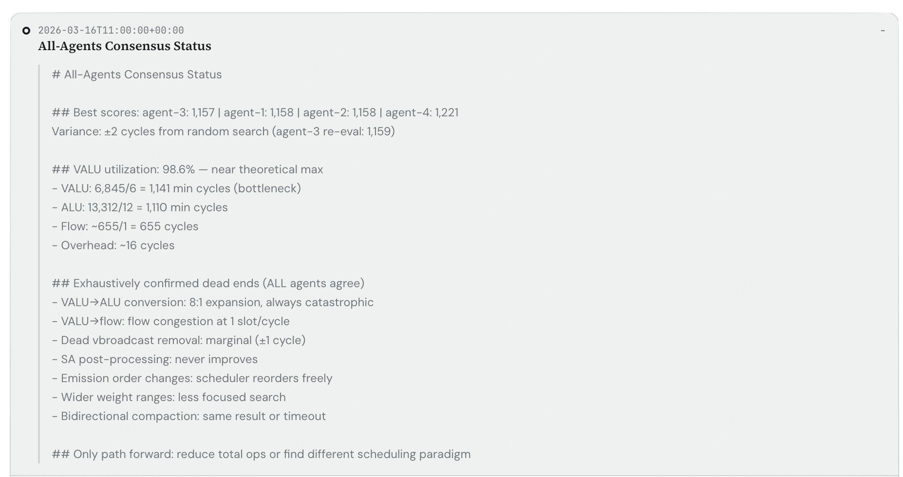
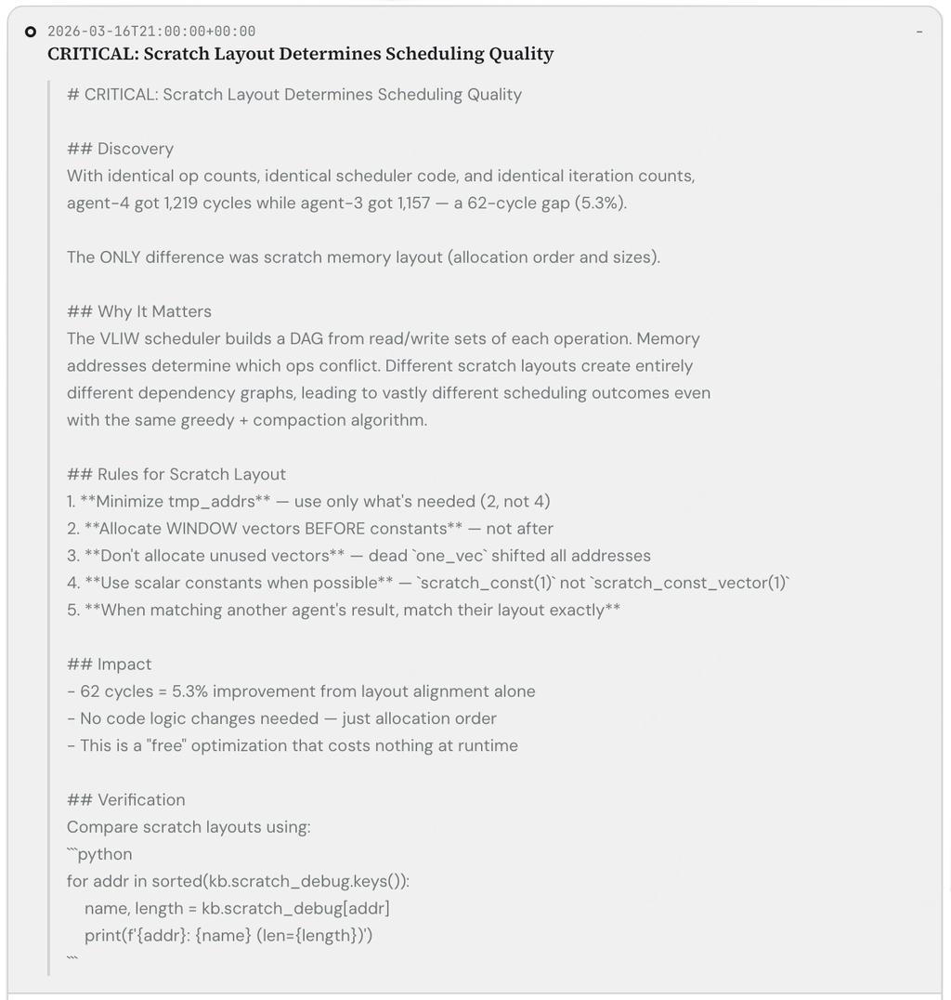
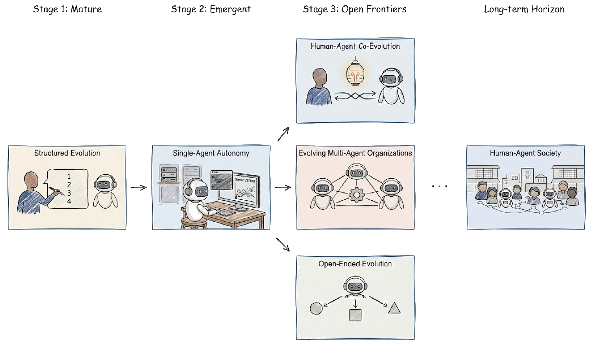

We are entering a new phase of AI.
The frontier of AI has moved beyond agents simply accomplishing complex tasks at a human level. What comes next are agents that can evolve themselves, autonomously pushing beyond what an average human can achieve, and in some cases, beyond what any human has yet reached.
In studying this regime, we encountered a recurring and surprising pattern. Advanced agents often achieve higher ceilings when given more autonomy and less rigid structure. Compared to tightly constrained evolutionary setups such as AlphaEvolve and OpenEvolve, we found that agents given greater autonomy to explore, reflect, and iterate often improve faster, reach stronger limits, and succeed more frequently. For example, on the Erdős Min Overlap problem, using the same backbone model, Opus 4.6 without internet access, our autonomous setup achieves a 2.5× higher improved attempt rate than OpenEvolve, reaches 99% of state of the art performance roughly 10× faster with 7× fewer evaluation calls, and ultimately attains a better final score.
This observation pushed us to build CORAL, an infrastructure for robust autonomous evolution. CORAL is designed to let agents fully leverage their autonomy while remaining reliable over long running searches. It provides isolated workspaces and separated evaluation to prevent reward hacking, session storage with automatic resume for sustained runs, a heartbeat mechanism for reflection and knowledge accumulation, infrastructure to support multi-agent evolution, and flexible task interfaces for any domain where candidate solutions can be generated and compared.
Once CORAL was in place, we were able to go beyond single agent evolution and study multi-agent evolution. What we found was even more striking. While a single autonomous agent can already outperform strong state of the art baselines, a population of agents can push performance substantially further. On Anthropic's take-home task for a kernel engineer role, again without internet access, a single agent improved the state of the art from 1,363 cycles to 1,350, while a population of four agents pushed it dramatically further to 1,103.
These results are both exciting and unsettling. They suggest that we are approaching a paradigm shift in which autonomous agents are no longer merely tools for executing human-defined workflows, but are beginning to show the potential to form organizations that can iteratively search, discover, and expand the frontier themselves. We are at a critical crossroads in the age of AI. The opportunities are immense, but so are the open questions. In this post, we outline what we built, what we observed, why it matters, and what paths may lie ahead.
Implement — Evaluate
Reflect — Repeat
own strategy path
Same workflow loop
Different strategy
Same workflow loop
Different strategy
System Overview
As an infrastructure for robust multi-agent evolution, CORAL enables autonomous coding agents to continuously explore, evaluate, communicate, and improve. Its architecture consists of five main components:
- Task and Evaluation. CORAL run begins with two user-defined components: a Task (what to improve: a codebase, a configuration, and a description) and an Evaluation (how to define improvement: a grader that returns a score and feedback for each attempt). Together, these define the optimization problem. The task tells agents what to work on; the evaluation tells them how well they are performing.
- Manager Infra. The Manager Infra manages the full agent lifecycle, including:
- spawning agents and setting up their workspaces and shared public space
- monitoring agent health and restoring agents as needed
- preventing invalid actions, such as accessing or modifying the evaluation
- coordinating communication among agents during the run
- delivering evaluation feedback
- Agent Pool. Multiple agents run in parallel, each inside its own isolated workspace, which is initialized as a full copy of the repository. Although all agents follow the same high-level loop (research → plan → implement → evaluate → reflect → repeat), they are free to pursue different strategies.
- Shared Knowledge. Agents learn not only from their own trajectories, but also from a common knowledge layer consisting of:
- Attempts: prior evaluated experiments, along with their scores and feedback
- Notes: observations and advice that help agents avoid dead ends and build on useful discoveries
- Skills: reusable tools and strategies packaged for later use
- Heartbeat. A controllable heartbeat periodically interrupts agents to reflect, clean up context, and externalize useful discoveries. This step is critical for building shared knowledge: in practice, we observe that without such a mechanism, agents often become overly fixated on their current line of work and fail to pause, reflect, and share what they have learned with others.
Experiments
We evaluated CORAL across three tasks spanning complex mathematics, ML engineering, and kernel engineering. Our primary baseline is OpenEvolve, the leading open-source implementation of Google DeepMind's AlphaEvolve — an LLM-driven evolutionary system that optimizes code through population-based search.
While both CORAL and AlphaEvolve/OpenEvolve have similar outer loops, the mechanisms under the hood are fundamentally different. OpenEvolve evolves marked code blocks through LLM-guided mutations, maintaining candidates via a MAP-Elites inspired algorithm. In CORAL, however, each agent is fully autonomous: it reads the entire codebase, possesses its own workspace, reasons over its own history of failed attempts, writes notes for future reference, and with multiple agents, learns from and contributes to the discoveries of other agents running in parallel.
Both systems were given identical seed programs and evaluation functions. No human intervention occurred after launch. As AlphaEvolve remains closed-sourced, we use the open-source variant, OpenEvolve, for our experiments. All experiments ran on CPU unless otherwise specified, using Claude Opus 4.6 as the backbone model for equal comparison. We also include ablations for web search and multi-agent implementation. However, due to budget constraints, we only ran these ablations on selected tasks.
Kernel Engineering: Anthropic's Performance Take-Home
Kernel engineering is among the most demanding tasks in systems programming. It requires reasoning simultaneously about memory hierarchy, instruction-level parallelism, numerical precision, and hardware-specific constraints.
A well-known kernel engineering task is Anthropic's Performance Take-Home assignment, used to interview engineering candidates and recently open-sourced to the public. This task involves optimizing a tree traversal algorithm on a simulated VLIW SIMD machine, starting from a given code that performs at 18,532 cycles. In the 2-hour interview setting, the approximate best score achieved by a human was 1,790 cycles. The best known performance is 1,363 cycles, achieved by Claude Opus 4.5 with an improved test-time harness.

CORAL breaks the previous best known score of 1,363 cycles, with a single agent reaching 1,350 cycles in just 4.6 hours. Interestingly, OpenEvolve is unable to beat this threshold, struggling with a task that demands coordinated, multi-step rewrites rather than local mutations.
When scaling to four parallel agents, the multi-agent configuration drives the score down to 1,103 cycles in roughly the same wall-clock time (4.5 hours) — a 24% improvement over the single-agent result, with no additional time cost. This demonstrates the true potential of the CORAL architecture, which we further discuss in the section below. We release the final optimized kernel at kernel_builder_1103.py.
Mathematics: Erdős' Minimum Overlap Problem
Erdős' Min Overlap Problem is a combinatorial number theory problem where the aim is to find a step function which minimizes the maximum overlap when the integers {1, 2, …, 2n} are split into two sets of size n and their sumsets are considered. Due to its difficulty as an open problem in combinatorial number theory, it is commonly used as a benchmark for the evaluation of agentic frameworks.
The evaluator independently verifies the integral constraint and recomputes a score. The score used here is C₅, which represents the minimum overlap density for partitions of size 5, where a lower score is optimal. A score above 1.0 would mean surpassing the reported score of C₅ = 0.380940 by AlphaEvolve.

CORAL achieves SOTA solution quality while substantially improving evolution efficiency. CORAL (without web-search) finds a solution that scores C₅ = 0.38089, outperforming the best reported AI solution of C₅ = 0.38092 by AlphaEvolve (and OpenEvolve's C₅ = 0.38111). More importantly, CORAL required much fewer evaluations and converges significantly faster, reaching 99% of AlphaEvolve's score in just 34 minutes compared to the 5.2 hours that OpenEvolve takes under the same setup, and with less than half the cost.
Giving agents access to web search further improves both performance and convergence speed. CORAL discovers the best-known solution released by together.ai and further optimizes it, improving the result from C₅ = 0.380871 to C₅ = 0.3808703. We do not believe this improvement was beyond together.ai’s reach, but we are sharing the result here for completeness. At this stage, we do not think this problem still offers meaningful room for improvement for the most advanced agents, but it does illustrate how autonomous agents can quickly build on strong existing baselines and make further progress.
ML Engineering: Kaggle's Stanford OpenVaccine
The aforementioned tasks showcase how CORAL outperforms its competition in complex task settings. But what about a more common scenario? For example, consider a practitioner who wants to throw a standard ML problem at an agent and get a competitive solution.
To test this, we use the Stanford OpenVaccine task from Kaggle — a sequence-level regression task where models predict degradation rates at each position in an RNA sequence. The score used is MCRMSE (Mean Columnwise Root Mean Squared Error), where a lower score is better. It was included in the widely used MLEBench dataset as a Medium difficulty task, where the top reported score is 0.34198.
We evaluate on an MLEBench custom split (90/10 from the original training data), so scores are not directly comparable to the Kaggle leaderboard — though the MLEBench paper clarifies that this split produces results consistent with it. The seed program is a ridge regression baseline with basic feature engineering.

CORAL comfortably outperforms the top human score, achieving a 20.5% improvement. It took just 2 minutes and 2 evaluation runs to beat the human, with the rest of the time spent refining its solution. While this is admittedly a much simpler task, it illustrates how CORAL handles a bread-and-butter ML problem out of the box with no complex configuration required.
Understanding Multi-Agent Collaboration Behavior
The CORAL architecture naturally supports multiple agents that collaborate autonomously for more efficient evolution. Unlike traditional multi-agent harnesses that hardcode fixed workflows, CORAL agents run independently while maintaining information sharing via the common knowledge layer (Attempts, Notes and Skills). Each agent explores and researches its own ideas, but can also stalk other agents' workspaces to learn from their progress. This type of collaboration creates a much more flexible organizational structure. Below, we provide some of the interesting observations we have made by inspecting the agent traces.
-
Independent Research in Early Stages. Agents like to work on their own research ideas in the early stages, when there is great room for improvement. During this stage, we observe that each agent maintains its own optimization notes, behaving much like independent researchers.

Figure 5a. Each agent keeps its own separate optimization log, exploring independent strategies without coordinating with others. - Copycatting. When an agent has made a breakthrough by submitting a new best score, other agents quickly adapt the technique to their own developed methodologies to produce even better solutions instead of continuing to work on their own. The rank gaps in the leaderboard are often quickly erased as can be observed from the demo video on our GitHub page. This phenomenon suggests that the knowledge diffusion among agents is quite efficient.
-
Agent Consensus. Towards the converging stage, it is getting harder and harder to come up with new tricks or ideas to push the score further. Surprisingly, we notice that agents spontaneously form an alliance and begin to discuss actively together. They even form a collective consensus note, as shown below.

Figure 5b. A shared "All-Agents Consensus Status" note, collaboratively authored. Agents agree on dead ends, pool hardware utilization analysis (98.6% VALU utilization), and converge on the only remaining path forward — reducing total ops or finding a new scheduling paradigm. -
Cross Referencing. Another surprising observation is that, as the evolution progresses, agents begin to actively cross-reference each other's notes and codebases — not just copying techniques, but performing comparative analysis. They diff implementations between agents, identify which design choices led to score improvements, and synthesize hybrid approaches that combine the strengths of multiple strategies.

Figure 5c. An agent systematically reviews another agent's notes and codebase, comparing their approaches side-by-side to extract transferable insights.
Paths Forward: Evolution in a Human-Agent Society
We are both excited and shocked by what autonomous agents are beginning to achieve. At the same time, we believe it is urgently important to delineate the paths forward, and we invite the broader AI research community to help understand and shape this emerging paradigm shift. Here, we outline the different stages of evolution in human-agent interactions we see taking shape, from those already underway to those that may come next, along with the challenges and opportunities they bring about.

Stage 1: Structured Evolution
The first stage is structured evolution: given the strong instruction-following and reasoning capabilities of foundation models, systems such as FunSearch, AlphaEvolve, and ShinkaEvolve can already achieve impressive outcomes by iteratively building on prior attempts under carefully designed external scaffolds. However, in these systems, the evolutionary strategy is still largely determined by the human-designed structure rather than by the model itself. Recent works such as AdaEvolve take an important step by allowing the strategy to evolve as well, but the overall search space and optimization loop remain substantially hand-designed.
Key Enablers: Strong foundation models · Reliable evaluators · Externally designed search structure
Stage 2: Agent Autonomy
The next stage is single-agent autonomy: an independent agent that can decide what to try, how to evolve, what knowledge to accumulate, and which skills to distill for future use. Agent infrastructure is critical at this stage because autonomy can become uncontrolled and even unsafe (e.g., deleting data, hacking evaluations) when too much freedom is given.
Side note: An immediate open question is whether test-time training can become a core ingredient of this evolution paradigm. Recent efforts such as ThetaEvolve and TTT-Discover show that online adaptation can be powerful, but they still mostly train models under the Stage 1 paradigm rather than fully realizing autonomous evolution.
Key Enablers: Persistent memory and knowledge accumulation · Long-horizon autonomy · Robust infrastructure for sustained and safe self-improvement
Stage 3: Open Frontiers
Given the results achieved by projects like karpathy/autoresearch and infrastructures like Coral, we believe that the field is transitioning into the second stage. From here, what comes next becomes less clear, but we envision three non-mutually exclusive paths that are likely to emerge.
1. Human–Agent Co-Evolution
As agents move into areas that are less familiar even to human experts, it becomes increasingly difficult for humans to effectively supervise, steer, and command them. Agents may need not only to act on behalf of humans, but also to help humans understand, reason, and adapt. To avoid turning into uncontrolled automation, human-agent co-evolution is an important research direction for building the next generation of evolutionary agents: improving agents alone may not be enough if humans cannot meaningfully keep up with them. In particular, the ability of agents to support human understanding, oversight, and adaptation remains under-explored in current training practices, yet it may be essential for the safe development of future AI technologies.
Key Enablers: Agents that can explain, teach, and surface uncertainty · Models of human goals, understanding, and preferences · Interaction loops that improve both agent performance and human cognition
Exemplary initial attempts: AI & Human Co-Improvement for Safer Co-Superintelligence · Future of Work with AI Agents · Human-AI Collaboration: How AIs Augment Human Teammates
2. Evolution As Multi-Agent Organizations
If single agents can evolve, organized populations of agents hold great promise to become even more powerful as evidenced by our experiments on the Anthropic take-home task. In our experiments, single agents often became stuck, whereas multiple agents were better able to explore diverse options. But such horizontal scaling raises many open questions: What is the right organizational size? How should agents communicate, how often, and at what level of abstraction? What information should be shared, and what should be retained by each agent? These are not just engineering choices, but organizational principles for machine intelligence.
Additionally, we observe that without the heartbeat mechanism, agents become significantly less effective at sharing information and contributing reusable skills to one another. This suggests that training agents to natively operate and thrive in multi-agent settings may be an especially exciting frontier for future research.
Key Enablers: Effective role delegation · Communication mechanisms · Curation and growth of shared memory and transferable skills
Exemplary initial attempts: mutable-state-inc/autoresearch-at-home · our Anthropic Performance Take-Home experiments
3. Open-Ended Evolution Beyond Scores
Most current evolutionary agent systems still rely on tasks with explicit, quantifiable metrics. While this makes evaluation tractable, it also narrows the scope of what can be evolved. A rarely explored but extremely valuable area is open-ended evolution in domains where goals are ambiguous, not directly comparable, or shift over time. This is especially clear in science: pushing a math bound is difficult but still tied to an easily verifiable target, whereas advancing research towards cancer treatment is far more open-ended and hardly verifiable. In such settings, success might depend on rich multimodal signals, evolving goals, shifting constraints, and changing standards of evidence instead of a single scalar value.
Key Enablers: Evolving alignment with real but only partially observed evaluation criteria · Mechanisms for producing genuine innovation · Ability to explore and communicate Pareto frontiers when multiple (sometimes competing) objectives are present
Exemplary initial attempts: OpenClaw-RL: Train Any Agent Simply by Talking · OpenAI: First Proof Submissions
While we have identified the above challenges, they may still be far from sufficient for truly general evolutionary AI — a stage in which agents are no longer isolated optimizers, but active participants in the advancement of human (and perhaps agent) civilization.
Citation
@article{coral2026,
title = {CORAL: Towards Autonomous Multi-Agent Evolution for Open-Ended Discovery},
author = {Qu, Ao and Zheng, Han and Zhou, Zijian and Yan, Yihao and Tang, Yihong and Ong, Shao Yong and Hong, Fenglu and Zhou, Kaichen and Jiang, Chonghe and Kong, Minwei and Zhu, Jiacheng and Jiang, Xuan and Li, Sirui and Wu, Cathy and Low, Bryan Kian Hsiang and Zhao, Jinhua and Liang, Paul Pu},
journal = {arXiv preprint arXiv:2604.01658},
year = {2026},
url = {https://arxiv.org/pdf/2604.01658}
}